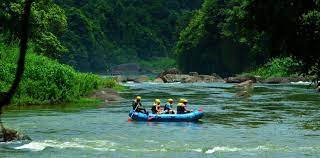
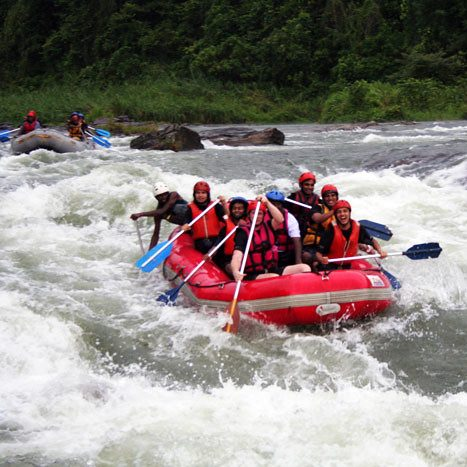

Kitulgala is a small town in the west of Sri Lanka.[1] The Academy Award-winning The Bridge on the River Kwai was filmed on the Kelani River near Kitulgala,[2][3] although nothing remains now except the concrete foundations for the bridge. Kitulgala is also a base for white-water rafting,[4] which starts a few kilometres upstream and also popular as a location for adventure based training programs. The Kelani river is wide at Kitulgala, but it is shallow apart from a deep channel near the opposite bank, so in the drier months it provides a safe and attractive place to swim, wash and play. The river can be crossed by walking out across the shallows and crossing the deep channel in a dugout canoe, which is stabilised with an outrigger.
Sri Lanka's most recently discovered bird, the Serendib scops owl was originally heard calling by Deepal Warakagoda in these forests. The hills above the rubber plantations also have mountain hawk eagle, crested treeswift and Layard's parakeet. The agriculture around Kitulgala is typical of the hilly wet zone. The solitary fishtail palm, Caryota urens, which is called kitul in Sri Lanka, gives rise to the town's name. Its sap is concentrated into a delicious syrup, not dissimilar to maple syrup, and crystallized as jaggery. It is also fermented to make palm wine. The pith is used to make sago, and the fibres to make rope. Red bananas in Kitulgala forest Bananas of both red and yellow varieties are grown. The yellow bananas are only some 8 cm long, but are sweeter and tastier than the commercial strains available in the West. Rubber trees are also grown on the higher areas. Many birders stay at Kitulgala. This area has most of the rainforest bird species that are found at the World Biosphere Reserve at Sinharaja, although in lower numbers. However, the secondary forest and cultivation at Kitulgala is more open than the pristine woodlands of Sinharaja, and elusive endemic species like Sri Lanka spurfowl, green-billed coucal and spot-winged thrush may be easier to see.
 